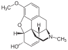

codeine

Definition: Codeine is an opiate and prodrug of morphine mainly used to treat pain, coughing, and diarrhea. It is also commonly used as a recreational drug. It is found naturally in the sap of the opium poppy, Papaver somniferum. It is typically used to treat mild to moderate degrees of pain. Greater benefit may occur when combined with paracetamol (acetaminophen) or a nonsteroidal anti-inflammatory drug (NSAID) such as aspirin or ibuprofen. Evidence does not support its use for acute cough suppression in children or adults. In Europe, it is not recommended as a cough medicine in those under 12 years of age. It is generally taken by mouth. It typically starts working after half an hour, with maximum effect at two hours. Its effects last for about four to six hours. Codeine exhibits abuse potential similar to other opioid medications.Common side effects include vomiting, constipation, itchiness, lightheadedness, and drowsiness. Serious side effects may include breathing difficulties and addiction. Whether its use in pregnancy is safe is unclear. Care should be used during breastfeeding, as it may result in opiate toxicity in the baby. Its use as of 2016 is not recommended in children. Codeine works following being broken down by the liver into morphine; how quickly this occurs depends on a person's genetics.Codeine was discovered in 1832 by Pierre Jean Robiquet. In 2013, about 361,000 kg (795,000 lb) of codeine were produced while 249,000 kg (549,000 lb) were used, which made it the most commonly taken opiate. It is on the World Health Organization's List of Essential Medicines. Codeine occurs naturally and makes up about 2% of opium.
Source: Wikipedia
Wikipedia Page (Something wrong with this association? Let us know.)
Wikidata Page (Something wrong with this association? Let us know.)